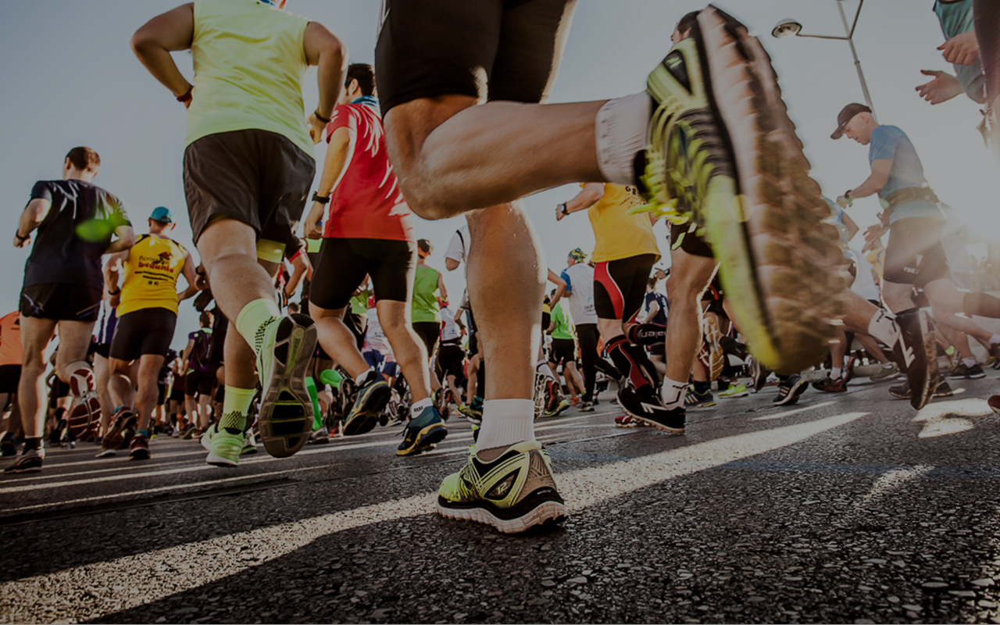
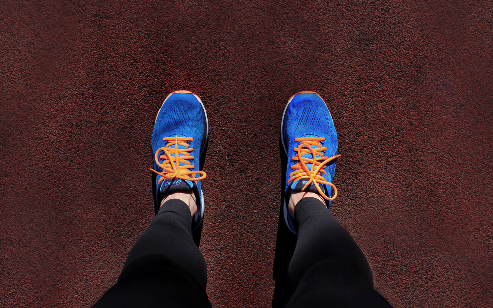
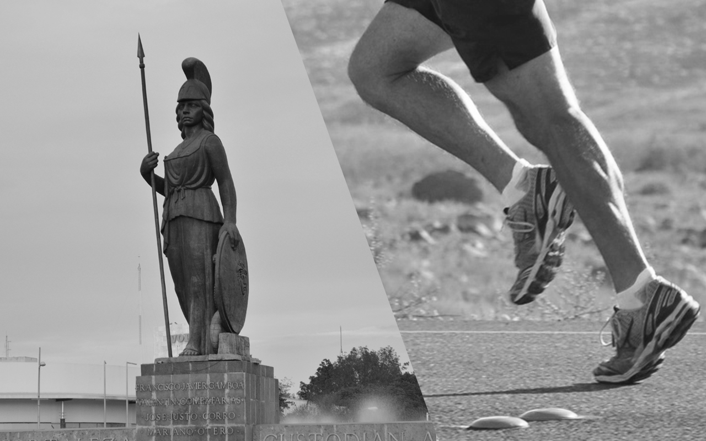
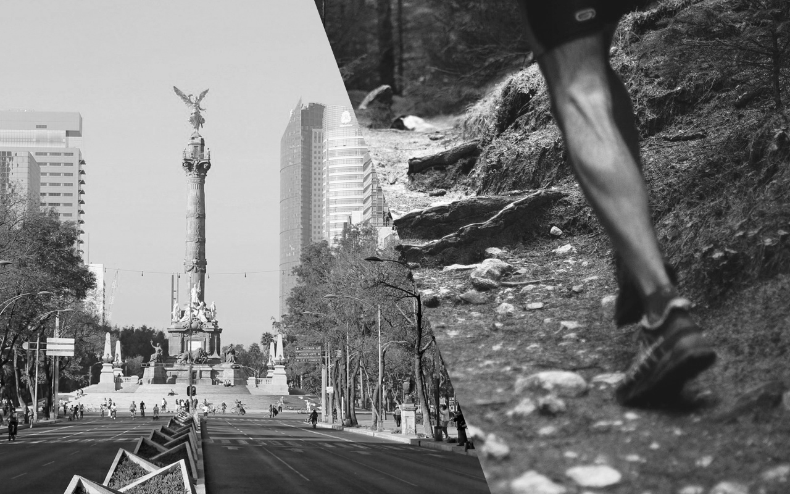
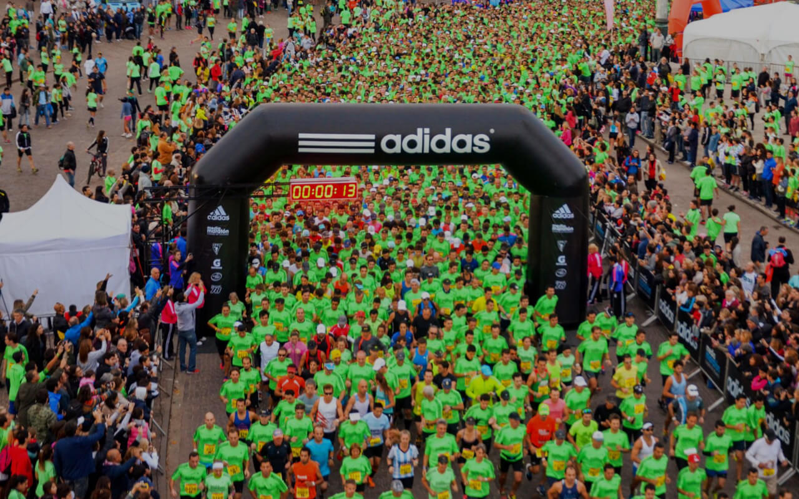
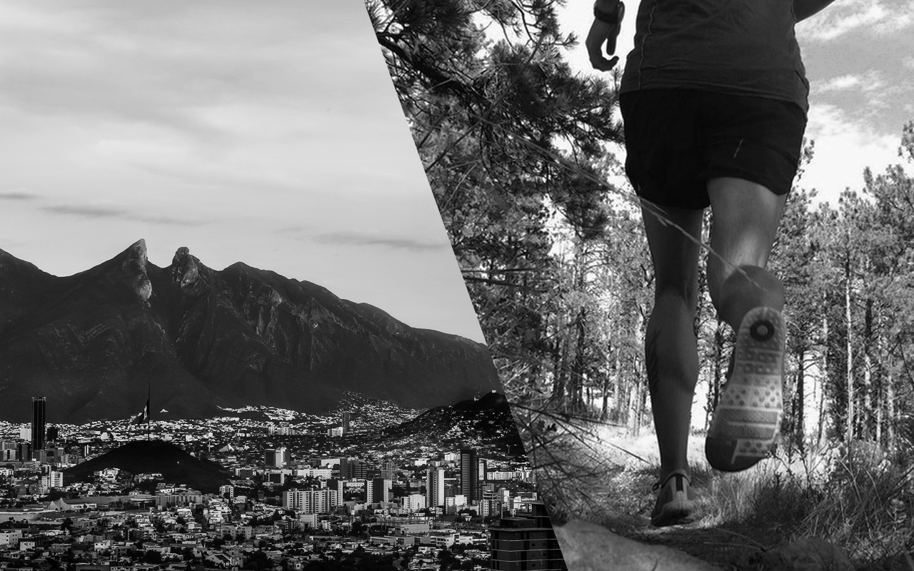

Hasta 12 meses sin intereses en tarjetas participantes
Ver mas
FIMASPORTBLOG
#WELIVESPORTS
Mes del Maraton
¿POR QUÉ LO
LLAMAMOS MARATON?
Noviembre 2, 2018

5 sentimientos de mi
primer maraton
18 Octubre
Correr un maraton es una montaña rusa, un camino de altibajos a nivel fisico, mental y emocional. Al
menos asi fue
la primera vez que enfrenté los 42k en el...

La nueva tecnologia
de Asics
7 Octubre Actualmente el mundo del Running cuenta con muchas marcas de calzado, las cuales a su vez
tienen muchas tecnologias
que hacen que el desgaste al correr...

En donde correr en
Guadalajara
2 Octubre Correr un maraton es una montaña rusa, un camino de altibajos a nivel fisico, mental y
emocional. Al menos asi fue
la primera vez que enfrenté los 42k en el...

Los mejores parques de la CDMX
23 de Septiembre La CDMX es una de las mejores ciudades para practicar running en parques, y una con
uno de los mejores climas para hacerlo. A pesar de ser una metropoli densamente...

5 opciones para tu primer maraton
15 Septiembre La primera experiencia corriendo un maraton puede volverse un factor que decida si sigues
corriendo o abandonas por completo tus aspiraciones maratonistas...

Lugares para correr Trail en Monterrey
1 de Septiembre El trail running es correr en su forma mas pura porque significa hacerlo en cualquier
tipo de terreno natural, desde bosques hasta desiertos. El beneficio de practicar trail run...